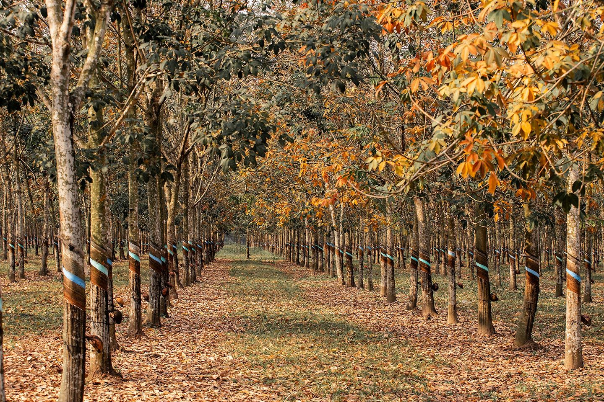

Đây là đặc sản cảnh quan của du lịch Bình Phước, đó là những cánh rừng cao su trải bạt ngàn, vào mỗi mùa lại mang màu sắc khác nhau, tạo nên khung cảnh tuyệt đẹp. Đặc biệt là vào dịp mùa thu tới, cả cánh rừng đổ lá vàng lá đỏ, ngỡ như khung cảnh trời Âu siêu lãng mạn.
Bạn có thể tranh thủ cuối tuần phóng xe máy cùng bạn bè xuống khu vực rừng cao su để ngắm cảnh Rừng Bù Đăng - một trong những khu rừng cao su đẹp nhất tỉnh Bình Phước để ngắm cảnh, chụp hình...